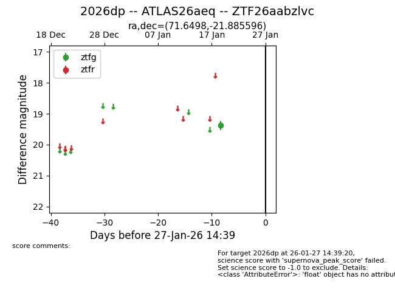
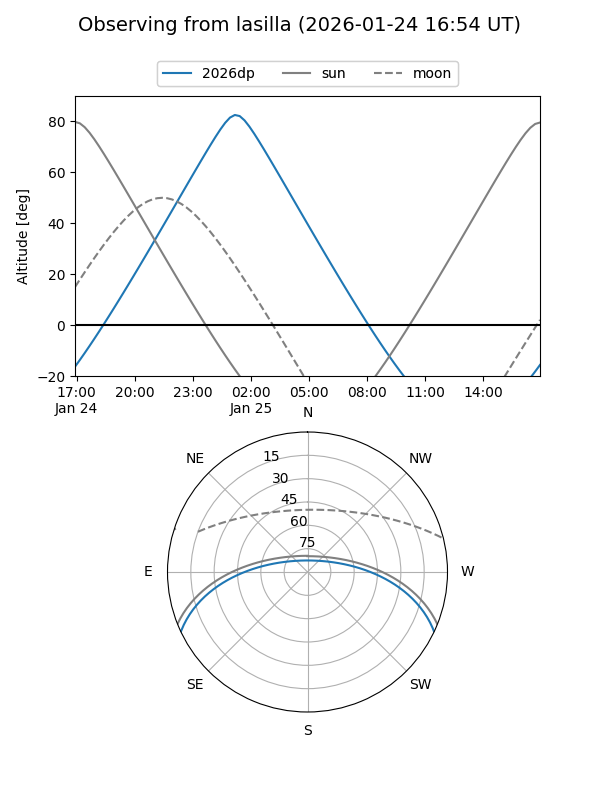
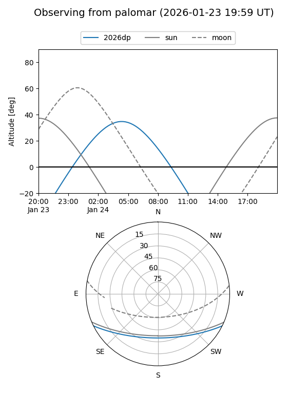

2026dp
Target 2026dp at 2026-01-26 13:26
Aliases and brokers:
FINK: link
Lasair: link
ALeRCE: link
TNS: link
YSE: link
alt names
ZTF26aabzlvc (ztf,fink_ztf)
2026dp (tns,yse)
ATLAS26aeq (atlas)
Coordinates:
equatorial (ra, dec) = 71.6498,-21.88560
equatorial (HMS+DMS) = 04:46:35.96,-21:53:08.15
galactic (l, b) = (220.9998,-36.71963)
Flags:
Photometry:
last ztfg=19.38
1 ztfg detections
Lightcurve

Visibility


Additional plots